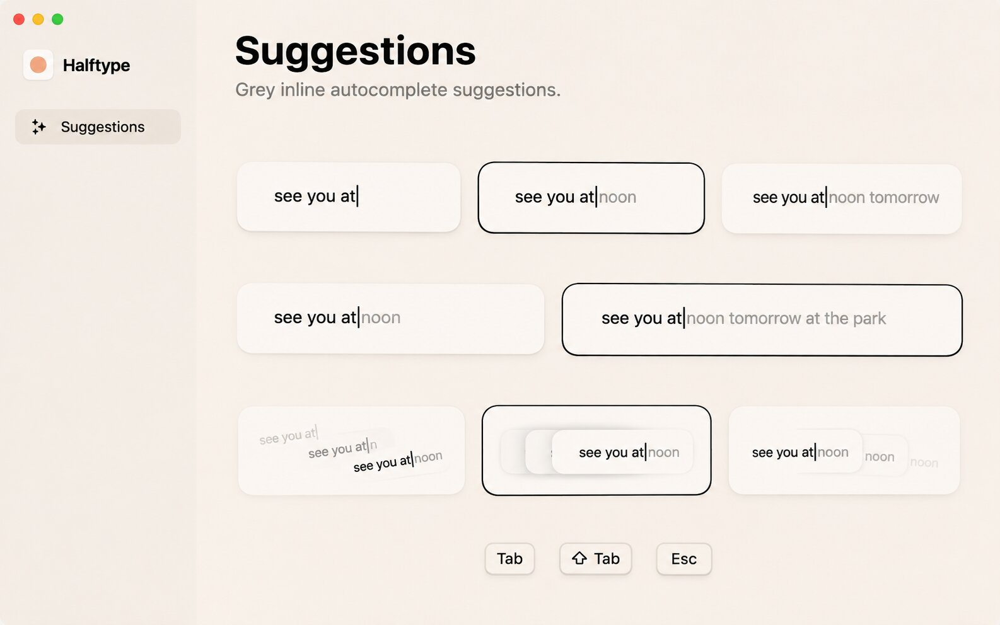
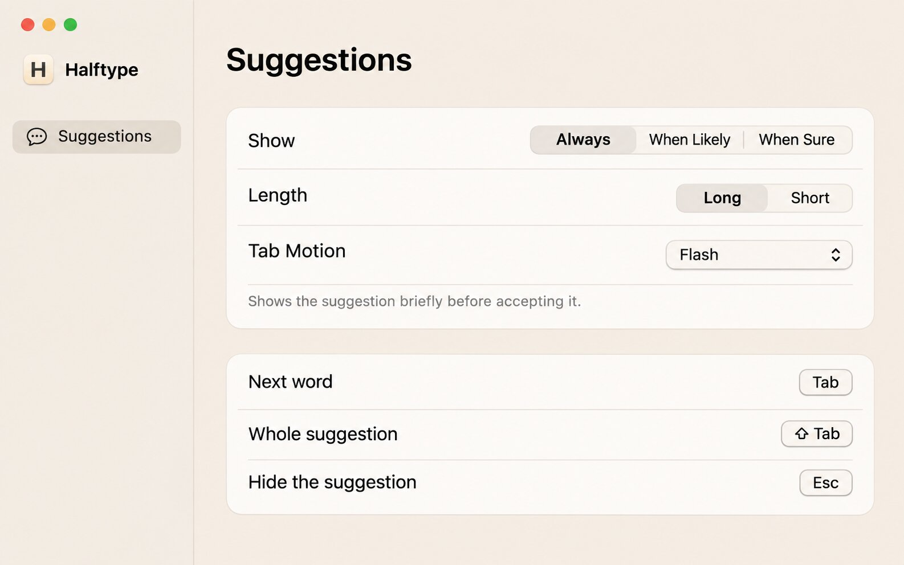

Settings pages: refined, less cramped, less text
John: "I want the rest of the pages including these updated to look better, more refined and polished and less cramped and text heavy. Can you show me some variations." Each window is live: switch pages with the tabs above it, click the controls.
- The blue in your screenshot is the biggest fix, and it comes free with any option. When the window is in front, macOS paints selected segments and the chosen Tab Motion ring in system blue, the only blue in a cream-and-ink app. My window shots are never in front, so they never showed it. Every option below uses ink instead.
- Pick B: Ink and one line. The same layout as now, but each setting shows one line for the option you picked (instead of a fixed sentence), the Tab, ⇧ Tab, Esc rows become one row of keys, and rows get more room. About a third less text, small code change.
- D if you want it to feel designed, not configured: Show and Length become preview tiles like Tab Motion, so you see what each does instead of reading it. Prettiest, most work, taller page.
- C is the System Settings look (grouped, hairlines, footnotes): familiar and very tidy, but closest to "a settings app".
Image ideas (Codex)
KEvery choice as a preview

D taken all the way: three rows of previews and no labels at all. Worth taking: the black ring as the only selection mark, and how calm a page of white tiles is. Too far without labels: you can't tell what each row sets. Prompt: images/prompts/K.txt.
LWarm System Settings

C, drawn by Codex: hairline groups, no notes on rows, one footnote for the choice made. Worth taking: the selected segment as a white pill in bold, not a colour. Tab Motion as a pop-up is tidier but loses its preview. Prompt: images/prompts/L.txt.